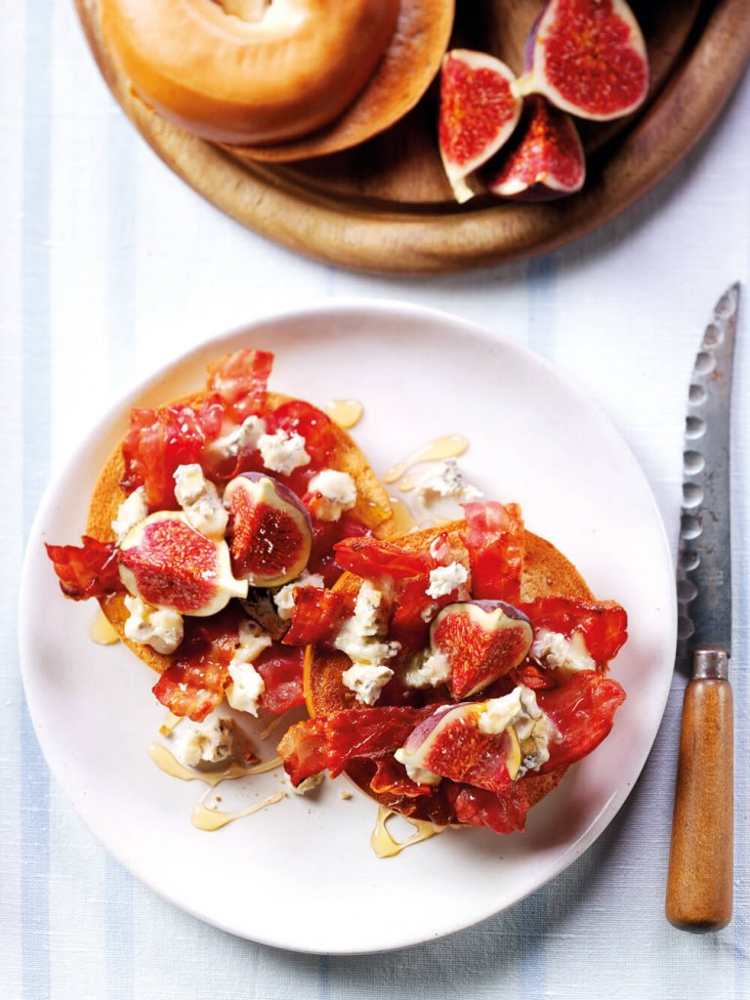
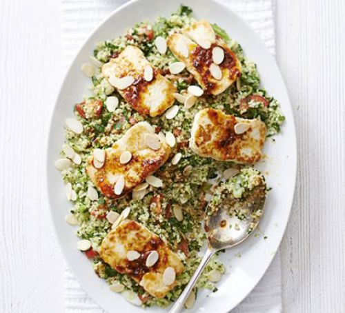
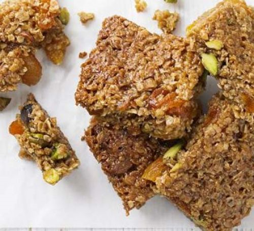

Honey
The best type of honey is raw or unpasteurized as it contains a vast rangeof plant chemicals that acts as antioxidants, these help to protect your body from cell damage. Also polyphenols which are compounds found in antioxidants play a major role in preventing heart diseases. Honey is also a well known sore throat remedy, it is used by adding it to hot water with lemon when you gain a cold virus, it also works as a cough suppressant. Honey can therefore be used for multiple purposes and has vast heath gains associated with its consumption.
Meal
Breakfast recipes
Halloumi with broccoli tabbouleh & honey-harissa dressing
Flapjack
Health
Health Benefits

A good source of antioxidants
Raw honey contains an array of plant chemicals that act as antioxidants. Antioxidants help to protect your body from cell damage due to free radicals which contribute to the aging and may contribute to the development of chronic diseases such as cancer and heart disease.
Heal wounds
Manuka honey is used in medical settings to treat wounds because it’s been found to be an effective germ killer and can boost healing time and reduce infection.
Are there any risks?
In addition to beneficial prebiotics and nutrients, raw honey can also carry harmful bacteria such as Clostridium botulinum. This is particularly dangerous for babies. Raw honey should never be given to an infant less than a year old. Symptoms of botulism poisoning in infants may include: constipation slow breathing loss of head control paralysis that spreads downward poor feeding lethargy weak cry In adults, symptoms can include an initial short period of diarrhea and vomiting, followed by constipation and more severe symptoms, such as blurred vision and muscle weakness. See a doctor if you experience any of these symptoms after eating raw honey.
Beauty
DIY recipes
Click here to find more DIY recipes!

Do you want kissable smooth and plump lips? Are you lips dehydrated and wrinkled because of the dry winter weather? Smooth the look of fine wrinkles around the lip area with my Plumping Honey Lip Mask. Made with ultra-repairing lanolin oil, smoothing castor seed oil, nourishing olive oil, sweet all-natural honey and delectable vanilla absolute.
- 2 teaspoons lanolin oil
- 3/4 teaspoon castor seed oil
- 3/4 teaspoon honey
- 1 1/2 teaspoons rose beeswax
- 1/2 teaspoon olive oil
- 1/4 teaspoon vitamin E oil
- 10 drops vanilla absolute
You will need: